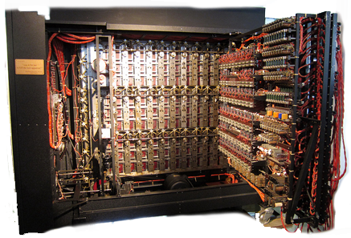

ALAN
TURING
the father of theoretical computer science
1912 - 1954
Developed the Turing Machine; all stored-program computers are modeled after this invention.
Devised the Turing Test for testing whether a computer is intellegent or not.
Developed a machine (the Bombe) which helped break the code of the WWII German Enigma machine, helping to win the war and according to Winston Churchill helped shorten the war by two years.